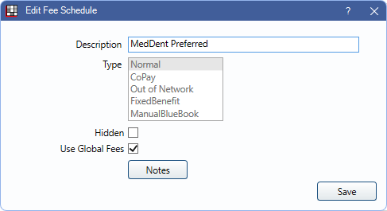

Fee Schedules
Easily create numerous fee schedules to enter and track UCR, insurance, and other fees.
In the Main Menu, click Setup, Fee Schedules.

Fee schedules can be assigned to insurance plans and providers to determine fees billed and insurance estimates, including write-offs. Different fee schedule types can be selected when creating a new fee schedule.
Determine if the fee schedule is used for billed fees, fixed benefit amounts, and more. The Global Fees setting determines if fee overrides can be entered for specific providers or clinics, making it easy to use a single fee schedule even for specialists.
Once a fee schedule is created, fees can be entered from the Procedure Codes List.